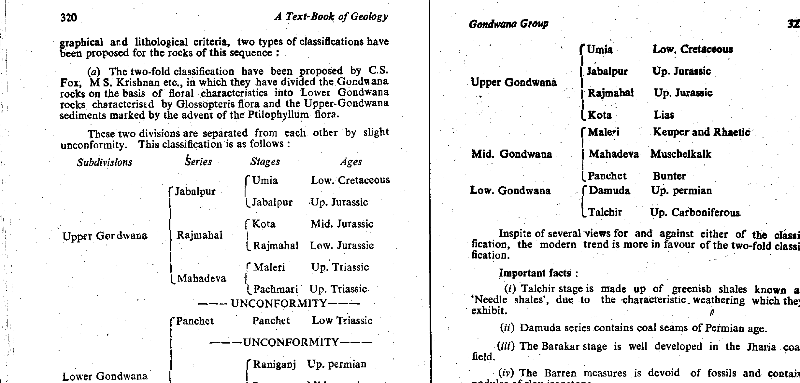

Q51: Indian Lower Gondwana Succession - Barren Measures Formation (Mid-Permian)
1. Stratigraphic Architecture of the Indian Gondwana Supergroup
The Gondwana Supergroup represents an extensive intracratonic, fluvio-lacustrine sedimentary depository preserved in discrete fault-bounded grabens and half-grabens across Peninsular India (Damodar, Son-Mahanadi, Pranhita-Godavari, Satpura, and Rajmahal basins). Deposited over an unbroken interval spanning from the Upper Carboniferous (~310 Ma) to the Lower Cretaceous (~110 Ma), the succession records India's paleogeographic migration from high-latitude southern circumpolar glacial realms to warm temperate and subtropical regimes.
In standard Indian lithostratigraphy (G.B. Mahapatra, A Text-Book of Geology, p. 320; K.M. Bangar, Principles of Engineering Geology, p. 338), the prolific lower division—termed the Lower Gondwana Group—is dominated by the thick continental clastics of the Damuda Group (Permian age). The stratigraphic succession in the type Damodar Valley basin is established as follows:
- Talchir Formation (Asselian–Sakmarian, Early Permian): Basal glacial tillites (boulder beds), striated pavement pavements, glacio-fluvial turbidites, and olive-green needle shales (rhythmites) devoid of workable coal seams.
- Karharbari Formation (Artinskian, Early Permian): Basal coal-bearing unit of the Damuda Group, consisting of poorly sorted, immature sub-arkosic sandstones, pebbly sandstones, and thin, low-moisture bituminous coal seams (e.g., Seam I of Giridih and Talcher).
- Barakar Formation (Kungurian, Early Permian): The primary and most economically vital coal-bearing formation of India. Characterized by cyclic fining-upward fluvial cyclothems of coarse-to-medium grained kaolinitic felspathic sandstones, carbonaceous shales, and multi-meter thick bituminous coal seams (e.g., Jharia Seams I through XVI).
- Barren Measures Formation (Roadian–Wordian–Capitanian, Middle Permian): A prominent, 400 to 750 m thick non-coaliferous lithounit sandwiched conformably between the two major coal-bearing formations (the underlying Barakar and the overlying Raniganj). In the Raniganj basin, it is lithostratigraphically designated the Ironstone Shale Formation (or Kulti Formation), while in the Satpura basin, its stratigraphic correlative is termed the Motur Formation.
- Raniganj Formation (Wuchiapingian–Changhsingian, Late Permian): The upper coal-bearing formation of the Damuda Group, composed of fine-grained cross-bedded sandstones, siltstones, gray shales, and numerous high-volatile bituminous and coking coal seams (e.g., Dishergarh and Sanctoria seams).
- Panchet Formation (Induan–Olenekian, Early Triassic): Red and chocolate clays, khaki-green micaceous sandstones, marking the Permian-Triassic boundary and the arrival of early dicynodont reptile faunas (Lystrosaurus).
2. Lithofacies & Paleoenvironmental Significance of the Barren Measures
The Barren Measures Formation is uniquely characterized by dense, dark-gray to black carbonaceous, micaceous shales interstratified with nodular layers and bands of sideritic and limonitic clay ironstone (sphaerosiderite). Why is it called "Barren"? Because despite its abundant carbonaceous matter and rich dispersed plant cuticles, it is completely devoid of workable coal seams.
This dramatic cessation of coal swamp peat accumulation during the Middle Permian reflects a regional climatic and geomorphic turnaround across eastern Gondwanaland. While the Barakar and Raniganj formations developed during humid, temperate, swamp-rich meandering to braided river systems with dense vegetation (the Glossopteris flora), the Barren Measures accumulated under an arid to semi-arid paleoclimate with pronounced seasonality. Fluvial drainage regimes transitioned into extensive, shallow lacustrine, playa, and muddy overbank floodplain basins where fluctuating redox conditions precipitated iron carbonate (siderite, $\mathrm{FeCO_3}$) rather than preserving thick peats.


Exam Question Analysis
Prompt: "The Mid-Permian non-coaliferous lithounit sandwitched between two major coal-bearing formations in the Indian Lower Gondwana succession is known as ________ Formation."
Option-by-Option Scientific Dissection
- (A) Barakar (INCORRECT): The Barakar Formation is the lower major coal-bearing formation of the Damuda Group, not a non-coaliferous unit. It accounts for over 70% of India's metallurgical and thermal coal production. It directly underlies the Barren Measures, rather than being sandwiched between two coal-bearing formations.
- (B) Lower Kamthi (INCORRECT): The Kamthi Formation is developed in the Pranhita-Godavari and Mahanadi-Son basins, representing Upper Permian to Early Triassic strata generally regarded as lateral equivalents of the Raniganj and Panchet formations. The Lower Kamthi contains coal seams in parts of the Godavari valley and does not occupy the Middle Permian sandwiched interval of the Damodar Valley succession.
- (C) Barren Measures (CORRECT): The Barren Measures Formation (Middle Permian, ~270–260 Ma) is universally recognized in Indian geology as the classic non-coaliferous lithounit precisely sandwiched between the prolific Lower Permian Barakar Formation below and the Upper Permian Raniganj Formation above. Its literal name "Barren" signifies its lack of mineable coal seams.
- (D) Raniganj (INCORRECT): The Raniganj Formation is the upper major coal-bearing unit of the Damuda Group. It overlies the Barren Measures and is extensively mined in the Raniganj, Jharia, and Bokaro coalfields. It is rich in high-grade coal seams, completely contradicting the prompt's condition of being "non-coaliferous."
1. Indian Lower Gondwana Stratigraphic Reference Matrix
| Group | Formation | Standard Age | Dominant Lithology | Economic Status & Coal Potential |
|---|---|---|---|---|
| Panchet | Panchet Formation | Early Triassic | Chocolate clays, green micaceous sandstones | Non-coaliferous; rich in Lystrosaurus fauna |
| Damuda Group | Raniganj Formation | Late Permian (Wuchiapingian–Changhsingian) | Fine sandstones, gray shales, coals | Major Coal-Bearing Unit (Upper Coal Measures) |
| Barren Measures (Ironstone Shale) | Middle Permian (Roadian–Capitanian) | Dark carbonaceous shales, sideritic ironstones | Non-Coaliferous ("Barren") Sandwiched Unit | |
| Barakar Formation | Early Permian (Kungurian) | Coarse felspathic sandstones, thick coals | Major Coal-Bearing Unit (Lower Coal Measures, Prime Coking Coal) | |
| Karharbari Formation | Early Permian (Artinskian) | Sub-arkosic grits, carbonaceous shales, coals | Coal-bearing (basal workable seams, e.g., Seam I) | |
| Talchir | Talchir Formation | Earliest Permian (Asselian–Sakmarian) | Glacial boulder beds, needle shales, tillites | Non-coaliferous; basal glacial marker |
2. Basin-Wise Correlative Units of the Barren Measures
- Damodar Valley (Raniganj Basin): Designated as the Ironstone Shale Formation or Kulti Formation due to commercial iron ore extraction from siderite bands in the 19th century.
- Damodar Valley (Jharia & Bokaro Basins): Mapped formally as the Barren Measures Formation (divided into Shibbabudih shales and Begunia sandstones).
- Satpura Basin: Stratigraphically correlated with the Motur Formation (non-coaliferous mottled red/green clays and calcareous sandstones).
- Pranhita-Godavari Basin: Correlated with the Barren Measures / Motur equivalent intervening between Barakar and Lower Kamthi.